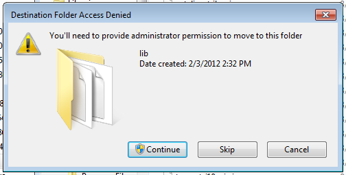
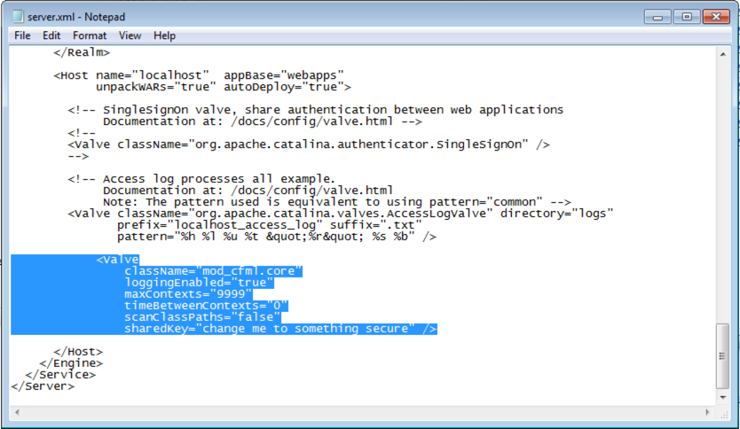
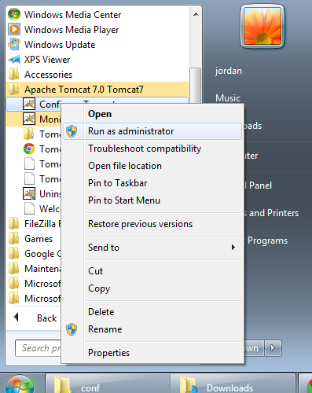

Tomcat Valve on Windows
Install mod_cfml Tomcat Valve on Windows
The mod_cfml Tomcat Valve is the part of the mod_cfml suite that takes the information passed to it from the Web Server and automatically creates a Tomcat host or host alias with it. The following steps cover what's required to install the mod_cfml Tomcat Valve on to a Tomcat instance on Windows.
Download mod_cfml Tomvat Valve
If you haven't already, go ahead and download the mod_cfml Tomcat Valve.
Install the mod_cfml Tomvat Valve
Once you have it downloaded, move the JAR file to the [Tomcat Home]/lib/ directory. The Tomcat "lib" directory gets loaded whenever Tomcat starts, so having the jar file in the lib directory means that the mod_cfml libraries will be loaded every time Tomcat starts.
The default installation directory for Tomcat if you used the Tomcat 7 installer is: "C:\Program Files\Apache Software Foundation\Tomcat 7.0", so you would need to copy the mod_cfml-valve.jar file would be:
C:\Program Files\Apache Software Foundation\Tomcat 7.0\lib\If you installed with the Lucee Installer, the Tomcat directory will be here by default:
C:\lucee\tomcat\lib\You will probably get prompted for Administrative rights...
I just hit "Continue" and the file was copied over. Different versions may require different actions. For example, you may have to enter in the administrator password on Win Server 2008 systems.
Configure the mod_cfml Tomcat Valve
Now that we have the mod_cfml JAR installed, we need to configure Tomcat to use it. To configure the Valve, we need to add it to the Tomcat server.xml file, located here:
C:\Program Files\Apache Software Foundation\Tomcat 7.0\conf\server.xmlIf you installed with the Railo Installer, the Tomcat server.xml file will be here by default:
C:\lucee\tomcat\conf\server.xmlNext, we need to add the following line to the default Tomcat host. As long as you didn't change it, the default host is the "localhost" host. Add this line in between the opening <host ...="" name="localhost"> and the closing </host> entries:
<Valve
className="mod_cfml.core"
loggingEnabled="false"
maxContexts="100"
timeBetweenContexts="0"
scanClassPaths="false"
sharedKey="secret key also set in the Apache/IIS config" />Here's what adding that line would look like on a default Tomcat for Windows install:
Notice how there are a lot of comments and other potentially confusing junk in there. Don't let that confuse you! Make sure the Valve line in is between the localhost opening <Host> and closing </Host> tags!
Restart Tomcat
The final step is to restart Tomcat. You can do this under the Windows Service controls, or by using the start menu links like so:
-> Start -> All Programs -> Apache Tomcat 7.0 Tomcat7 -> Configure Tomcat -> Right-Click and select "Run as Administrator"
Once you're restarted Tomcat, you should be all set!